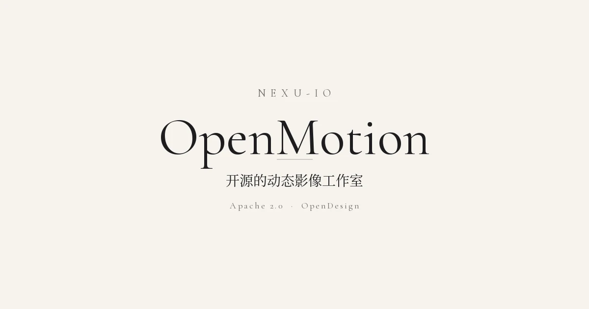

OpenMotion 是 OpenDesign（GitHub 组织 nexu-io）做的一套本地动态影像工作室。仓库给自己的定位是「Claude Motion 和 CapCut 的开源替代」：你可以上传参考视频，或贴一条社交视频链接，让本地智能体按你的品牌和文案重做一条片子，再在 Studio 里改时间轴，导出 MP4。工程本身用 HTML、CSS 和 JavaScript 来写画面、字、转场和时间；另外引入了一种叫 Motion.md 的 Markdown 格式，用来记下镜头顺序、时长和转场。本页以这个项目为中心。
studio/ 与上游 Hyperframes 为 Copyright 2026 HeyGen, Inc.），本页附官方简体中文 README 与许可证原文；第三方模板、媒体、字体、模型与品牌示例各属其权利人。移除请求：Removal request。它是什么
公开仓库在 github.com/nexu-io/openmotion。项目站点写的是 open-design.ai/motion/。GitHub 仓库页的创建时间是 2026-05-11 09:40:38 UTC（新加坡时间 17:40:38）。README 写明，这个仓库是从 nexu-io/html-anything 改名而来；旧应用留在 legacy 分支。
它想解决的事很具体：不是再做一个只能提示词出片的生成器，而是把「看懂参考片、用代码重搭镜头、补上缺的素材、在时间轴上改、再导出」放进同一个本地工作区。仓库把它叫做 full-stack agentic video studio。所谓 BYOA 和 BYOK，是说你用自己的本地智能体，也用自己的模型密钥；应用本身按 Apache-2.0 发布，但调用生图、生视频、配乐或语音时，仍要遵守各家模型自己的条款，并且通常要付费。
README 列出了 22 个本地智能体，配图替代文本中的名字是：WorkBuddy、Codex CLI、Claude Code、OpenCode、Hermes、Antigravity、Gemini CLI、Grok Build、Kimi CLI、Cursor Agent、Qwen Code、Qoder CLI、GitHub Copilot、Pi、Kiro CLI、Kilo、Mistral Vibe、DeepSeek TUI、Reasonix、Aider、Devin、Trae CLI。本页按原文照录。
README 还写有「300 多份 Motion.md」模板指南。这是项目自己的说法。
可以怎么用
仓库写了几条并行的安装路径：在 ChatGPT 插件市场安装；把一段说明贴进本地智能体，让它按 install.md 从源码安装；或者按文档安装已发布的 npm 应用。也可以自己克隆仓库，用 npm 在本地启动 Studio。源码安装的默认命令是 npm ci、npm run build:studio、npm start，然后打开启动时打印的 studioUrl 或 previewUrl。完整参考视频和部分模板归档走 Git LFS，需要时再拉；README 也提醒把工程和密钥放在仓库目录之外，用 MOTION_DATA_DIR 指定工作区。
从参考片到可编辑工程，README 写了四步：先把镜头顺序、转场和声音要点记进 Motion.md，并标出要替换的部分；再让智能体用你的品牌、文案和画面重做 HTML 镜头，排进 Studio 的时间轴；对着原片和复刻片看同一处，改时间、动作和声音；最后导出 MP4，同时保留 HTML 源码和媒体。它也可以导入 HyperFrames 项目的 ZIP，在本地继续改。
公开的第一期 MCP 界面，README 写的是十六个名字：九个工程工具、两个模板目录工具、一个工程归档工具、一个工程管理工具、一个 BYOK 媒体工具，以及同一套工作区资产能力的两个名字。密钥留在本地服务里，不进工程文件；这份公开 MCP 约定也不包含把成片发布到社交平台。平台对接、定时发布和效果回传，文档里写成正在规划。
技术栈与上游
Studio 一侧，README 写的是 React 19、TypeScript 5.9、Vite 6、Tailwind CSS 4、Zustand、CodeMirror 和 Dockview。运行时是 Node.js 加 TypeScript，本地 HTTP 服务。组合和动效建立在 HTML/CSS/JS、GSAP，以及钉死版本的组合引擎上；渲染走 Chromium、Puppeteer Core、FFmpeg 和 FFprobe。根目录 package.json（版本字段为 0.0.1，private: true）把 hyperframes 及其相关包都钉在 0.9.7，并声明 engines.node 为 >=22.18.0。
这里有一处文档内部不一致：README 的徽章和 package.json 写的是 Node.js 22.18+，但安装说明和架构表反复要求「Node.js 26.11.1」，并写 CI 也固定在这个版本。本页两处都保留，标为冲突待审。
组合与 Studio 的基础来自 HeyGen 的 Hyperframes。OpenMotion 自己的 template-library/NOTICE.md 写明：官方示例来自 heygen-com/hyperframes 的指定提交，按上游 Apache-2.0 分发。致谢表还提到 MotionGit / adunext 的 Kinetic Tech（在库里包装成 Presenter Tech）、DeepSeek Harness 与 Super-agent 原型（仅作智能体扩展的参考，原型并不等于 OpenMotion 当前运行时），以及 Claude Motion、CapCut、ChatCut、OpenChatCut、OpusClip 等产品参考。GSAP 和 FFmpeg 是依赖，各有自己的条款；README 写得很清楚：模型和第三方库保留各自条款，应用本身是 Apache-2.0。
模型目录里的出入
开篇介绍写的是用 GPT Image 2.6 做画面、Seedance 2.5 补镜头、Suno 配乐、Eleven v4 做旁白。同一份 README 稍后又说，在模型设置里连接 fal.ai 并刷新目录后，可以找到 GPT Image 2.6、Nano Banana 2.1、FLUX.3、Seedance 2.5、Kling 4.0、Wan 3.0 和 Eleven v4。再下面的预设表却列出 Codex Image、Nano Banana 2、FLUX Schnell、Seedance 2.0、Wan 2.2、Suno v4 和 Kokoro。官方中文 README 与英文稿在这些名字上是对齐的，因此不是翻译问题，而是同一份文档内部的说法不一。这些模型能否连上，以项目说明为准。
版本与星标
2026-11-18（新加坡时间）读取仓库主页时，侧栏数字为 10,717 星、1,057 次 fork、42 人 watch。README 顶上的星标徽章仍写「9.5k（2026-11-09）」，已经落后。这些数字会变。
根目录 CHANGELOG.md 把 0.0.1 写成「候选说明，不是发布记录」，并说历史 0.6.x 版本仍可取得，但发布和验收要另有证据。仓库页显示 1 个 release、2 个 tag。本页不补造发布日期。更新日志还指向 npm 包 @openmotion/app；本日没有打开 npm 页面复核。
需要留意的地方
- 星标徽章日期与现场数字不一致：徽章 9.5k（2026-11-09），仓库页 10,717 星（2026-11-18）。数字会变。
- Node 版本冲突待审：
package.json与徽章写>=22.18.0，README 安装说明和架构表写 26.11.1。 - 根目录 LICENSE 未填写版权人；
package.json也没有 license 字段。许可结论以 LICENSE 全文和仓库页 SPDX 为准。 - 「300 多份 Motion.md」为 README 自报。
- 模型名称与版本在开篇、fal.ai 说明和预设表中不一致；各模型集成效果以项目说明为准。
- 22 个本地智能体的名单来自 README 配图替代文本。
- 0.0.1 在更新日志里不是已发布记录。
- README 中的品牌复刻示例（包括 Dan Martell 原片与 Riya 的复刻并置图，以及 OpenAI、Anthropic、Notion、ElevenLabs 等模板预览）含第三方作品，部分还涉及真人，本页均不转载。
官网、ChatGPT 插件页和 Discord / 飞书邀请按 README 中的链接列出。
附录一、官方简体中文 README
以下为仓库 docs/README.zh-CN.md 的官方简体中文文本，按 Apache-2.0 附录于此。插图与演示 GIF 请见原仓库，相对链接已改为指向 GitHub 仓库。如与英文 README 有出入，以英文稿为准。
Claude Motion 与 CapCut 的开源替代方案
项目主页 · GitHub · OpenDesign · ChatGPT 安装
OpenMotion
OpenMotion 是一个由 AI Agent 驱动的全栈视频创作工作台，也是 Claude Motion 与 CapCut 的开源替代方案。上传参考视频或粘贴社交平台上的视频链接，就能用自己的品牌视觉规范和文案复刻原片。
- 🎬 全栈视频复刻。 Agent 拆解参考片，用 HTML 重建镜头和转场，并生成缺少的素材。你可以在同一工程里用 Studio 调整剪辑节奏，再渲染导出 MP4。
- 🔑 BYOA（自带 Agent）与 BYOK（自带 API 密钥）。 OpenMotion 开源免费。直接在常用的本地 Agent 里复刻视频，每一层都能用自己的 API 密钥。
- 🧩 OpenMotion 首次定义了 Motion.md，用 Markdown 记录镜头顺序、时长和转场。品牌宣传片的拆解可以随工程一起分享。
- 🎛️ 图片、视频、音乐和语音。 用 GPT Image 2.6 生成画面、Seedance 2.5 补镜头、Suno 配乐，再用 Eleven v4 生成旁白。查看模型与接入方式
从 ChatGPT 插件市场安装
一键安装，无需手动配置。 安装后，在对话中即可从零创作动效视频、复刻参考视频，或使用模板开始创作。
在 Agent 中安装
复制下面的指令，发给你的本地 Agent，即可从源码安装 OpenMotion：
阅读 https://github.com/nexu-io/openmotion/blob/main/install.md，按照指南在当前 Agent 中安装并连接 OpenMotion。
安装完成后，Agent 会打开本地模板库并推荐一个模板，确认选择后再创建工程。源码安装指南
安装已发布的 npm 应用（可选）
上方源码安装仍是仓库安装的默认方式。如需明确选择包含预构建 Studio 及已配置在线模板库的已发布应用，请复制下面的指令，发给你的本地 Agent：
阅读 https://github.com/nexu-io/openmotion/blob/main/docs/install.md，按照指南在当前的 Agent 中安装并连接已发布的 npm 应用。
已发布应用的安装与版本通道选择。已发布的版本可能落后于当前检出的源码。
克隆仓库并在本地启动
需要 Git、npm 和 Node.js 26.11.1：
git -c filter.lfs.process= -c filter.lfs.smudge= -c filter.lfs.required=false clone --depth 1 --single-branch --branch main https://github.com/nexu-io/openmotion.git
cd openmotion
npm ci
npm run build:studio
npm start
打开启动时打印的实际 studioUrl 或 previewUrl，进入 模板库。Studio 和 MCP 读取此仓库中的模板。要让 Agent 连接同一份源码，请参阅 源码接入与 MCP 配置。仓库大小与可选素材
从已有项目快速开始
可以将 HyperFrames 项目 ZIP 直接导入 OpenMotion，继续编辑已有动效和本地素材。将项目文件夹压缩为 ZIP，在 全部项目 → 导入项目 中选择文件，再打开导入的副本，即可通过 Studio 或 Agent 继续修改。导入会创建独立副本，项目需符合支持的原生工程结构。
22 个本地 Agent · 选择你的 Agent
原仓库此处有 22 个本地 Agent 的一览图，本页不转载。名单见上方导读。
🎞️ 使用场景与复刻效果示例
原仓库此处有插图或演示预览，本页不转载。请在 nexu-io/openmotion 查看。
从产品演示、品牌宣传片、真人口播等场景寻找创作参考。下方预览展示参考视频。
浏览完整模板库 → — 查找更多模板，获取完整视频、Motion.md 和复刻指令。
AI 重剪与改稿
|
OpenAI · 把多段画面串成故事 围绕同一条叙事主线连接不同画面，再展开为多场景蒙太奇。 查看模板 |
Anthropic · 重剪创作过程拼贴 按顺序叠放片段与截图，让主标题始终清楚可读。 查看模板 |
产品发布与演示
|
Notion · 先展示问题，再呈现解决方案 从任务堆积过渡到有序协作，把前后变化换成自己的产品能力。 查看模板 |
OpenAI · 从用户需求引出产品发布 用层叠的需求积累节奏，再用一次清晰的揭示呈现产品。 查看模板 |
品牌宣传片与动效
|
Kimi · 用动效连接不同世界 用代码条带、错位切片和转场串起一组品牌画面。 查看模板 |
Slack · 拆解并重组品牌标识 将标识拆成基础形状，用自己的配色与名称重新组合。 查看模板 |
讲解与教程
|
Anthropic · 讲清跨工具工作流 沿着一个问题展示数据、操作与结果，让上下文始终连贯。 查看模板 |
Stripe · 逐步展示审批过程 把同一个请求从对话延续到手机确认，保持视觉线索一致。 查看模板 |
数据故事与图表
|
OpenAI · 用图形讲解复杂概念 通过共用的点与连线，让一个几何图形自然变成下一个。 查看模板 |
Anthropic · 逐层呈现结果 先给出总览，再展开单项发现，最后呈现每项结果对应的操作。 查看模板 |
音乐与艺术视觉
|
ElevenLabs · 展示音乐逐步成形 把提示词、段落与节奏连接到波形和最终音乐。 查看模板 |
Deezer · 让音乐海报动起来 让标题保持稳定，用周围流动的波形表达节奏。 查看模板 |
AI 口播剪辑
以真人讲述为主线，用字幕、画面插入和关键词动画突出重点，为自己的录制内容找到合适的表达方式。
| 🎓 教学与讲解 | ||
|---|---|---|
|
改变职业生涯的 6 项关键技能 编号要点 + 动态关键词 参考 · @careerwithriya |
现在最好的 AI 工具是什么？ 出镜讲解 + 悬浮工具卡片 参考 · Dan Martell |
10 天 AI 基础，第 1 天 个人讲解 + 清晰字幕 参考 · @harpercarrollai |
| 🖥️ 展示工作流 | ||
|
我每天使用的 5 个工具 桌边讲述 + 工作流插画面 参考 · Ali Abdaal |
带重点标注的工具演示 真人 + 屏幕 + 标注 参考 · @john.tagudin |
值得安装的 5 个 Claude 插件 口述清单 + 说明截图 参考 · @aiwithsachi |
| 🎬 讲故事，展示产品 | ||
|
创始人实验，第 1 集 创始人日记 + 日常补充镜头 参考 · @khris.sheer |
AI 创作者与产品 产品故事 + 证据 + 画中画 参考 · @ugc.rachelll |
别再为 5 个 AI 工具付费 产品教程 + 实际演示 参考 · Kevin Stratvert |
✨ 为什么选择 OpenMotion
1. 全栈 Agentic 视频创作工作室
用 HTML 写视频。 OpenMotion 用 HTML、CSS、JavaScript 描述场景、字体、布局、转场和时间。实拍、生成片段、图片、音乐和旁白作为合成素材，同一工程可在 Studio 打开并渲染为 MP4。
编写、观看、修改、渲染。 让 Agent 替换产品、精简开头、加入真人、修改字幕或尝试新结尾。它修改工程源码，你在可视化编辑器中审阅。本地 MCP 客户端使用工程工具，具备 shell 的 Agent 还可遵循 Skills 和固定版本 CLI 工作流。Agent 配置 · 原生合成指南 · HTML 示例工程
原仓库此处有插图或演示预览，本页不转载。请在 nexu-io/openmotion 查看。
在同一个 Studio 工作区中预览视频、排列片段并导出成片。
在 Studio 里可以改什么
| Studio 中 | 当前可以做什么 |
|---|---|
| 故事与时间轴 | 导入、排列素材，让 Agent 按脚本或确认的时间码精简、重排和改稿 |
| 动效与字幕 | 围绕内容编写动态文字、转场、标注、图表和字幕 |
| 素材与声音 | 导入素材，通过内置模型集成生成图片、视频、音乐和 TTS 旁白 |
| 图片修改 | 用支持参考图的模型生成候选，采用替换时保留时间和动画 |
| 预览与版本 | 在 Studio 审阅，手动或让 Agent 修改，保留工程供后续迭代 |
| 导出与源码 | 将固定版本渲染为 MP4，保留 HTML、CSS、JavaScript 和素材 |
“保留已确认的揭示效果。中间场景换成这段屏幕录制，按这些时间码精简开头，最后的 CTA 多停留两秒。”
从参考片到可编辑的复刻工程
- 拆解参考片。 选一段想复刻的镜头，用 Motion.md 记下镜头顺序、转场和声音落点，标出要换成自己品牌的部分。
- 重建镜头。 Agent 按你的品牌视觉规范，结合文案和产品画面重建 HTML 场景，在 Studio 里排成一条可编辑的时间轴。
- 对照审片。 在同一时间点比较原片与复刻结果，微调镜头时长、动作和声音，再播放整段确认节奏。
- 导出和分享。 渲染 MP4，保留 HTML 源码和素材。要让其他人改编，可以把 Motion.md、预览和可分享的素材随工程一起提交。工程提交清单
2. 完全开源免费，在本地 Agent 直接用，每一层都支持 BYOK
选择你的 Agent。 WorkBuddy、Codex、Claude Code 和 DeepSeek Harness 可直接查看安装步骤。其他按钮打开通用的 MCP 和 CLI 接入说明。
| 自带什么 | 如何用于视频 |
|---|---|
| 🤖 Agent — BYOA | 通过 Skills 和 MCP 连接现有本地 Agent，受支持时也可使用 CLI。保留惯用客户端、账号和工作上下文。 |
| 🔑 Key — BYOK | 在 Model Settings 配置受支持的媒体 API 密钥，选择图片、视频、音乐和 TTS 模型；受支持的本地媒体集成可使用已有 Agent 登录。 |
| 🎨 品牌与素材 | 加入标志、字体、截图、实拍、脚本和音乐，在 Motion.md 的 Brand Kit 章节记录品牌信息和获准使用的素材。 |
| 🧩 起步资源 | 浏览参考、动效组件、模板和社区 Skills，选择方向，把源码或参考交给 Agent，做成自己的作品。 |
OpenMotion 创作流程全部开源：Skills、工程工具、模型集成、Studio 和渲染。 本地运行、检查实现、按需扩展。这条本地工作流不收软件订阅或单次渲染费，也可以只用自己的视频、图片和声音，不调用生成 API。
供应商凭据保存在工作区配置中。Agent 订阅和第三方模型调用按各自的规则计费。 各 Agent 接入方式与验证状态
3. 300 多份 Motion.md，让视频复刻有据可循
OpenMotion 首次定义了 Motion.md：用 Markdown 记录镜头顺序、时长、转场和可替换素材。线上模板库将参考视频与动效说明集中在同一个详情页。
Brand Kit 章节记录品牌身份、语气和已确认的产品信息；Design 章节可引用独立的 DESIGN.md 复用视觉规则。保留参考片的运动方式与节奏，同时让成片呈现自己的品牌。
分享行业或品牌体系时，可使用 Motion Package v0.2 草案和编写工具，把设计与动效文档、素材、依赖声明和可选的 SKILL.md 打包。随附配方演示两个主题输入；包校验不等于 Studio 自动导入或成片还原度验收。
选好模板，再换成自己的内容
按参考品牌、使用场景和视频类型筛选，也可以直接搜索。模板详情页集中提供预览、风格描述、制作要点和 Motion.md 下载。在 Studio 点击复刻模板，即可复制指令交给 Agent。
仅有参考视频的条目会进入复刻流程；提供可编辑源码的条目可以直接交给 Agent 改编。
4. 多模态生成：图片、视频、音乐与语音
BYOK 将你的多模态账号接入视频工作流。 在 Model Settings 添加受支持的 Key、选择模型，通过 Studio 的 Model Gateway 生成图片、视频、音乐和语音。预览候选并采用到同一工程。受支持的本地图片路径可复用已有 Agent 登录。
在模型设置中连接 fal.ai 并刷新目录，即可查找 GPT Image 2.6、Nano Banana 2.1、FLUX.3、Seedance 2.5、Kling 4.0、Wan 3.0 和 Eleven v4。下方列出的预设在刷新前也可查看。
| 视频所需素材 | 内置模型目录示例 | 如何用于影片 |
|---|---|---|
| 🖼️ 图片 | Codex Image；Atlas Cloud 的 Nano Banana 2；fal.ai 的 FLUX Schnell | 品牌视觉、场景美术、辅助图片；受支持的 Codex 图片路径可基于参考图编辑 |
| 🎬 视频 | Atlas Cloud 的 Seedance 2.0；fal.ai 的 Wan 2.2 | 生成镜头和 B-roll，与实拍及动效组合 |
| 🎵 音乐 | Atlas Cloud 的 Suno v4 | 根据情绪和创作简报生成配乐 |
| 🎙️ TTS / 旁白 | fal.ai 的 Kokoro | 根据已确认脚本生成旁白，编排到画面和音乐中 |
“使用 Motion.md 中的 Brand Kit 和已确认脚本，生成开场美术、插入视频、背景音乐和 TTS。把选中的结果加入重建工程，对齐声画，再展示完整剪辑。”
🛠️ 安装与技术文档
从源码安装
通过 Agent 安装，请使用上方的安装指令。如需从源码运行，使用下面的步骤。
Agent 安装成功后会直接打开编辑器的模板库，暂不创建项目。先浏览和预览，选好后点击“打开并编辑”，再创建独立工程。当前聊天尚未加载 MCP 时，可使用安装结果中的模板库直达链接；宿主不支持自动展示时会提供链接。
运行 OpenMotion
从免费本地创作全栈开始。 连接自己的 Agent、打开内置模板或导入实拍，用本地应用渲染。需要生成新素材时，在 Model Settings 加入受支持的媒体 Key。
准备 Git、npm 和 Node.js 26.11.1。从源码预览和导出还需要 Chrome/Chromium 和 FFmpeg/FFprobe。运行环境配置
git -c filter.lfs.process= -c filter.lfs.smudge= -c filter.lfs.required=false clone --depth 1 --single-branch --branch main https://github.com/nexu-io/openmotion.git openmotion
cd openmotion
npm ci
npm run build:studio
npm start
在浏览器中打开 http://localhost:4173，进入模板库，选择模板并点击复刻模板，复制指令给你的 Agent。工程与凭据保存在代码仓库之外；用 MOTION_DATA_DIR 选择工作区。
接入你的 Agent
支持插件的 Codex 可在 checkout 中运行：
bash scripts/install-motion.command
WorkBuddy · 在 WorkBuddy 中导入 OpenMotion Connector，或将它提供的 mcp.json 添加为自定义 MCP，然后让 WorkBuddy 列出可用的视频模板。WorkBuddy 接入说明
Claude Code · 按手动 MCP 配置连接这份源码，再运行 /mcp 检查连接。
DeepSeek · 在 DeepSeek TUI 中可从终端操作可编辑的 HTML 工程。使用 DeepSeek Harness 时，可通过 Cordis 配置连接 OpenMotion 的 MCP 工具。DeepSeek Harness 配置
本地安装器使用本地构建的包。Windows 测试包
先试一个线上模板：
用 OpenMotion 复刻这个模板详情页的视频，替换成我提供的 Brand Kit 和文案。保留动作与节奏，在 Studio 中打开可编辑结果供我检查。
要从视频开始，请提供参考并使用复刻简报。宿主无法在对话旁打开 Studio 时，可使用返回的本地工程链接。
Skills、MCP 与 CLI
插件与 MCP 服务名称为 openmotion；Tools、Skills 与资源分别使用 openmotion_*、openmotion-* 和 openmotion://。旧 Tool 和资源名称保留兼容；旧 Skill 入口已移除，请使用 openmotion-*，升级后刷新宿主 Skill 列表。命名与安装兼容说明
在 checkout 中发现并安装五个核心工作流，使用 Skills CLI:
npx skills add ./skills --list
npx skills add ./skills --skill openmotion-director openmotion-production openmotion-template-to-video openmotion-recreate openmotion-video-to-template
这只复制指引，不安装运行时或注册 MCP。保持共享文档可用并单独连接应用，或使用上面的一体化本地安装器。
| Skill | 用途 |
|---|---|
| openmotion-recreate | 重建参考视频并对比结果 |
| openmotion-template-to-video | 改编已有可编辑模板 |
| openmotion-director | 原创影片、叙事、动作、声音与创作审片 |
| openmotion-video-to-template | 制作便携的可复用模板 |
| openmotion-production | 范围明确的修改、预览、检查、排错和导出 |
连接其他本地 Agent · 按照官方安装指南在客户端完成接入。支持 stdio MCP 的客户端可以使用下方配置。对于通过终端工作的 Agent，打开工程目录，用本机引擎 CLI 预览和渲染 HTML 场景。 使用 npm 发布版时，运行 openmotion setup --host <Agent 名称>（例如 opencode）。setup 会安装应用和 Skills，并返回需要添加的启动器配置。其他本地 Agent
{
"mcpServers": {
"openmotion": {
"command": "/absolute/path/to/node",
"args": ["--experimental-strip-types", "/absolute/openmotion/mcp.ts"],
"env": { "MOTION_DATA_DIR": "/absolute/openmotion-data" }
}
}
}
十六个公开 MCP 名称（含一个素材库兼容别名）覆盖模板发现与详情、工程创建与读取、编辑、预览、媒体导入与 BYOK 生成、可复用素材版本、工程管理与 ZIP 分享、导出、版本恢复与取消。共享工作流和引擎指引通过 MCP resources 提供。工具契约
用 openmotion_list_templates 查找模板，openmotion_get_template 查看详情，再用 openmotion_create_project 创建可编辑副本。模板目录
使用 npm start 启动应用，使用 npm run mcp 启动 stdio。具备 shell 的 Agent 可使用运行时返回的固定版本引擎 CLI 检查和渲染；托管修改仍遵守工程 revision 校验。原生创作
从参考视频到可编辑工程
| 研究参考 | 为你的故事重建 |
|---|---|
| 开头与叙事 — 先出现什么，如何铺垫，何时揭示 | 你的承诺、产品事实与行动号召 |
| 镜头结构 — 构图、镜头运动、图层与视觉层级 | 你的界面、实拍、标志和辅助图片 |
| 动效与节奏 — 入场、转场、缓动与阅读停留 | 按你的内容调整相同的运动意图 |
| 字体与身份 — 字体层级、配色与构图 | 你的字体、色板、文案和 Brandkit |
| 声音与节拍 — 语音时序、配乐提示与重音 | 你的声音、音乐素材与声音方向 |
如果 Agent 无法打开社媒链接，可以提供本地视频和时间码。只有原片时使用参考片复刻流程，手里已有可编辑源码时使用模板流程。
用 OpenMotion 为我们的品牌重建附件参考视频。
研究：开头、镜头顺序、字体、转场和声音提示。
保留：选定片段的产品揭示方式与镜头节奏。
替换：用提供的素材替换标志、界面、主张、文案和片尾。
生成：遵循品牌与已确认脚本，通过已配置模型生成缺少的
图片、视频、背景音乐和 TTS 旁白。
创建可编辑工程，在 Studio 打开并对比参考的对应时刻。
解释剩余差异。审阅后导出 MP4，保留源码供后续修改。
把模板交给 Agent
- 播放参考视频，展开「风格描述」或「制作要点」查看细节。要保存指南，点击「下载 motion.md」。
- 点击「查看完整指令」，再点「复刻模板」复制指令。把指令粘贴到 Agent，附上品牌素材和创作要求。
- 在 Studio 打开 Agent 生成的工程，继续剪辑并导出。
系统架构
在 Studio 调整时间轴，或让 Agent 修改镜头，编辑的都是同一份 HTML 工程。TypeScript 本地服务管理素材和版本，浏览器渲染引擎把选定版本导出为 MP4。
各模块如何协同
Agent 通过工程工具写入时会核对版本，避免旧请求覆盖刚完成的修改。生成的素材由你选定后加入工程。每次导出都使用发起导出时的版本，之后的编辑留给下一版。导出器检查文件规格，画面、声音和节奏可以通过播放成片确认。
查看完整架构与路线图文字说明
创作输入
参考视频 + 实拍 + 脚本 + 品牌素材
↓
社区知识
Motion.md + BRANDKIT.md + Skills + 模板 + 组件
↓
BYOA：本地 Agent OPENMOTION STUDIO
DeepSeek Harness / Codex / Claude Code React 19 + TypeScript + Vite
其他本地宿主、Skills 与宿主分析工具 Tailwind CSS + Zustand
| CodeMirror + Dockview
stdio MCP 素材 / 预览 / 时间轴
9 个公开工程工具 本地 HTTP
└──────────┬──────────┘
↓
本地应用：Node.js + TypeScript + node:http
会话 / 工程文件 / 素材 / revision / 导出任务
↓ ↓
BYOK：MODEL GATEWAY 视频即代码
你的 Key / 账号 / 模型路由 HTML 场景 + 素材 + Studio 数据
发现 / 生成任务 HTML + CSS + JavaScript + GSAP
↓ ↑
模型适配器 |
Codex Image / Atlas Cloud / fal.ai |
图片 / 视频 / 音乐 / TTS |
↓ |
生成候选 → 预览 / 选择 → 显式采用到工程 ────┘
↓
渲染与验证
选定的工程版本 → HTML 引擎 + Chromium → FFmpeg / FFprobe
↓
当前交付
MP4 + 可编辑源码 + 素材 + 版本和导出证据
↓
规划中：多平台发布
平台连接器 → 发布审阅 → 排期 → 表现反馈
↓
规划中：知识反馈
版本关联结果 → 团队记忆 / RAG → 经评估的 Skill 改进
BYOA 连接已有 Agent 客户端；素材工作区支持直接用模型生成和复用素材。BYOK 连接受支持的模型账号。Studio 与本地服务管理可编辑工程，供应商凭据不写入工程文件。一期公开 MCP 包含十六个名称：九个工程工具、两个模板目录工具、一个工程归档工具、一个工程管理工具、一个 BYOK 媒体工具，以及同一素材库能力的两个名称。先在 Studio 配置供应商密钥，再用 openmotion_media_use 发现模型、经本地 Gateway 生成媒体。用 openmotion_assets_use（openmotion_assets 仍兼容）上传、查看或生成可复用素材，保留版本，并把选定版本导入影片。素材库指南。密钥留在服务内；公开 MCP 契约不包含发布。
技术栈与源码索引
| 层次 | 技术 | 阅读入口 |
|---|---|---|
| Studio 与编辑器界面 | React 19、TypeScript 5.9、Vite 6、Tailwind CSS 4、Zustand、CodeMirror、Dockview | Studio 源码 · Motion 应用 · 编辑器开发 |
| 应用运行时 | CI 固定 Node.js 26.11.1，原生 HTTP、TypeScript 执行和本地文件/JSON | server.ts · workspace.ts · 会话架构 |
| Agent 接入 | 本地 stdio MCP、五个核心 Skills 和生成的宿主适配器 | mcp.ts · phase1.ts · 适配器生成 |
| 多模态生成 | Codex 媒体适配器、Atlas Cloud predictions、fal.ai 队列集成与持久化生成任务 | Gateway 服务 · 供应商适配器 · 模型目录 |
| 合成与动效 | HTML/CSS/JS、GSAP、固定版本合成引擎与原生时间轴/历史 | 引擎集成 · 模板源码 · 版本适配器 |
| 渲染与媒体 | Chromium、Puppeteer Core、FFmpeg、FFprobe | 渲染服务 · 导出校验器 · 原生运行时锁定 |
| 创作知识 | Markdown、源码包、预设和对比证据 | Motion.md · 核心 Skills · 社区资源库 |
| 验证与打包 | Node 测试运行器、Vitest、Studio 检查、npm 锁文件和显式分发清单 | 测试 · Studio 测试 · CI · 分发 |
| 发布与学习 — 规划中 | 平台适配器、排期、版本关联反馈与检索，实现仍待设计 | Studio 蓝图 |
依赖锁定在 package.json、package-lock.json 和运行时锁文件中。模型和第三方库保留各自条款；应用采用 Apache-2.0。
选择一层，一起建设
| 你的方向 | 可贡献的内容 | 入口 |
|---|---|---|
| 前端与交互 | 改进时间轴、媒体生成控件、无障碍或预览行为 | Studio · 媒体生成器 |
| AI 与模型基础设施 | 沿用共享任务与媒体流程，新增供应商适配器或模型预设 | Gateway 设计 · 供应商适配器 |
| Agent 与开发工具 | 改进宿主适配器、Skill、资源指引或工程工具流程 | Agent 适配器 · MCP 契约 |
| 动效与创意编程 | 分享组件、原生模板或带真实改编的 Motion.md 包 | 组件 · 条目清单 |
| 视频与渲染 | 改进导出可靠性、媒体处理或可复现验证 | 引擎说明 · 导出校验器 |
| 社交发布 | 设计规划中的连接器层：账号访问、发布审阅、排期和版本映射 | 发布方向 · 讨论提案 |
从本地安装开始，选择一层，遵循 CONTRIBUTING.md 和 AGENTS.md。工程与凭据放在 checkout 外，保留依赖锁定与上游许可。
产品架构 · Studio 开发 · Model Gateway · 贡献指南
多画幅交付与发布
为每种画幅调整构图，在 Studio 逐版审阅，再导出 MP4 上传到对应平台。
| 请求的版本 | 需要调整什么 |
|---|---|
| 竖屏短视频 — Reels、Shorts、TikTok、小红书等 | 开头、大号易读文字、构图和字幕位置 |
| 横屏影片 — 产品页、发布或 YouTube | 界面细节、更宽构图与解释时间 |
| 方形信息流 — 社交活动 | 紧凑构图、标题与清楚的结尾信息 |
渠道账号连接、定时发布和成片表现回流仍在规划中。
Studio 路线图与协作概念图
| 领域 | 当前可用 | 方向 |
|---|---|---|
| 重建与剪辑 | Agent 引导重建、模板改编、可编辑工程和 MP4 导出 | 更多经评估的重建案例和可复现对比 |
| 品牌与知识 | 显式使用 Brandkit、Motion.md、Skills 和源码包 | 个人/团队记忆、RAG 和经评估的 Skill 改进 |
| 人与 Agent | 同一本地工程交接 | 时间轴评论、共同审阅和协作编辑 |
| 多模态创作 | 内置图片、视频、音乐和 TTS 集成；生成、选候选、采用到时间轴 | 跨视频、图片、声音、音乐和 Avatar 服务的综合搜索 |
| 多平台发布 — 规划中 | 手动编排不同画幅，交付 MP4 | 平台连接器、发布审阅、排期、自动画幅重构与社交预设 |
| 反馈 | 人工审阅和保存工程版本 | 版本关联表现数据与周期制作任务 |
协作概念图：在时间轴上标注“这个镜头多留一拍”，Agent 据此调整节奏。此功能仍在规划中。 Studio 蓝图 · 知识与反馈
🤝 分享作品与制作方法
欢迎分享你复刻的视频、可复用的模板，或记录镜头节奏的 Motion.md。把参考片和成片放在一起，附上可编辑工程，其他人就能沿用你的剪辑节奏，换上自己的素材。
| 贡献类型 | 应包含 |
|---|---|
| 复刻作品 | 参考与作者、简报、工程、预览、对比和剩余差异 |
| 模板或组件 | 可运行源码、可编辑项、素材、预览和署名 |
| Skill 或设计体系 | 方法、保持/修改规则、实际执行示例 |
| Brandkit | 品牌身份、准确产品事实和可分享素材 |
| Agent 支持或编辑器改进 | 范围聚焦且可复现验证的变更 |
资源提交清单 · 参与贡献 · 反馈问题 · 贡献者 · 媒体资料
本仓库已从 nexu-io/html-anything 更名为 nexu-io/openmotion。
OpenMotion 官网 · OpenDesign Go · Discord · 飞书群 · X @OpenDesignDevs · X @OpenDesignHQ · YouTube
在 GitHub 上给 OpenMotion 点个 Star
致谢
品牌原片的发布者及时间码见对照区。 Agent 与模型标志
OpenMotion 采用 Apache-2.0许可。第三方代码、模板、媒体和字体保留各自许可证和署名。
| 来源 | 关联 |
|---|---|
| OpenDesign | OpenMotion 的开发团队，负责界面设计、资源结构和品牌方向。设计体系 和 Motion 展示 |
| Hyperframes | HTML 视频合成、Studio 和渲染基础，固定为 0.9.7；创作者参考、外部改编演示与组件源码；引擎说明、模板声明 和目录来源 |
| MotionGit / adunext | Kinetic Tech 源码以 Presenter Tech 打包；许可与署名 |
| Hypit | Agent 主导热门视频复刻与可编辑版本的灵感来源；未引入运行时 |
| rea-video | 参考分析与案例研究：实拍开箱 及角色、代码和屏幕录制；展示素材署名，未引入运行时 |
| OpenAI · Codex Originals | 外部品牌影片参考；官方活动静帧与站外观看链接 |
| DeepSeek Harness / Super-agent 原型 | Agent 可扩展性与持续任务的参考；该原型独立于 OpenMotion 当前运行时 |
| Claude Motion / CapCut / ChatCut / OpenChatCut | Agent 创作、易用 AI 剪辑与持续改稿的产品参考 |
| OpusClip | 分发与外部排期的产品参考；无内置连接器 |
| GSAP / FFmpeg | 动画与媒体依赖，版本保留在 package.json 和运行时锁文件 |
素材来源 · 其他展示素材来源 · 字体声明 · Studio 许可证
原 HTML Anything 应用保留在 legacy 分支。当前分支与分发边界参见仓库迁移指南 。
Star 历史趋势
原仓库此处嵌有星标趋势图，本页不转载。可在 star-history.com 查看，或打开仓库中的 离线快照。

附录二、Apache License 2.0 原文
录自仓库根目录 LICENSE（2026-11-18 抓取）。文末附录版权行仍为占位符，未填写具体版权人。
Apache License
Version 2.0, January 2004
http://www.apache.org/licenses/
TERMS AND CONDITIONS FOR USE, REPRODUCTION, AND DISTRIBUTION
1. Definitions.
"License" shall mean the terms and conditions for use, reproduction,
and distribution as defined by Sections 1 through 9 of this document.
"Licensor" shall mean the copyright owner or entity authorized by
the copyright owner that is granting the License.
"Legal Entity" shall mean the union of the acting entity and all
other entities that control, are controlled by, or are under common
control with that entity. For the purposes of this definition,
"control" means (i) the power, direct or indirect, to cause the
direction or management of such entity, whether by contract or
otherwise, or (ii) ownership of fifty percent (50%) or more of the
outstanding shares, or (iii) beneficial ownership of such entity.
"You" (or "Your") shall mean an individual or Legal Entity
exercising permissions granted by this License.
"Source" form shall mean the preferred form for making modifications,
including but not limited to software source code, documentation
source, and configuration files.
"Object" form shall mean any form resulting from mechanical
transformation or translation of a Source form, including but
not limited to compiled object code, generated documentation,
and conversions to other media types.
"Work" shall mean the work of authorship, whether in Source or
Object form, made available under the License, as indicated by a
copyright notice that is included in or attached to the work
(an example is provided in the Appendix below).
"Derivative Works" shall mean any work, whether in Source or Object
form, that is based on (or derived from) the Work and for which the
editorial revisions, annotations, elaborations, or other modifications
represent, as a whole, an original work of authorship. For the purposes
of this License, Derivative Works shall not include works that remain
separable from, or merely link (or bind by name) to the interfaces of,
the Work and Derivative Works thereof.
"Contribution" shall mean any work of authorship, including
the original version of the Work and any modifications or additions
to that Work or Derivative Works thereof, that is intentionally
submitted to Licensor for inclusion in the Work by the copyright owner
or by an individual or Legal Entity authorized to submit on behalf of
the copyright owner. For the purposes of this definition, "submitted"
means any form of electronic, verbal, or written communication sent
to the Licensor or its representatives, including but not limited to
communication on electronic mailing lists, source code control systems,
and issue tracking systems that are managed by, or on behalf of, the
Licensor for the purpose of discussing and improving the Work, but
excluding communication that is conspicuously marked or otherwise
designated in writing by the copyright owner as "Not a Contribution."
"Contributor" shall mean Licensor and any individual or Legal Entity
on behalf of whom a Contribution has been received by Licensor and
subsequently incorporated within the Work.
2. Grant of Copyright License. Subject to the terms and conditions of
this License, each Contributor hereby grants to You a perpetual,
worldwide, non-exclusive, no-charge, royalty-free, irrevocable
copyright license to reproduce, prepare Derivative Works of,
publicly display, publicly perform, sublicense, and distribute the
Work and such Derivative Works in Source or Object form.
3. Grant of Patent License. Subject to the terms and conditions of
this License, each Contributor hereby grants to You a perpetual,
worldwide, non-exclusive, no-charge, royalty-free, irrevocable
(except as stated in this section) patent license to make, have made,
use, offer to sell, sell, import, and otherwise transfer the Work,
where such license applies only to those patent claims licensable
by such Contributor that are necessarily infringed by their
Contribution(s) alone or by combination of their Contribution(s)
with the Work to which such Contribution(s) was submitted. If You
institute patent litigation against any entity (including a
cross-claim or counterclaim in a lawsuit) alleging that the Work
or a Contribution incorporated within the Work constitutes direct
or contributory patent infringement, then any patent licenses
granted to You under this License for that Work shall terminate
as of the date such litigation is filed.
4. Redistribution. You may reproduce and distribute copies of the
Work or Derivative Works thereof in any medium, with or without
modifications, and in Source or Object form, provided that You
meet the following conditions:
(a) You must give any other recipients of the Work or
Derivative Works a copy of this License; and
(b) You must cause any modified files to carry prominent notices
stating that You changed the files; and
(c) You must retain, in the Source form of any Derivative Works
that You distribute, all copyright, patent, trademark, and
attribution notices from the Source form of the Work,
excluding those notices that do not pertain to any part of
the Derivative Works; and
(d) If the Work includes a "NOTICE" text file as part of its
distribution, then any Derivative Works that You distribute must
include a readable copy of the attribution notices contained
within such NOTICE file, excluding those notices that do not
pertain to any part of the Derivative Works, in at least one
of the following places: within a NOTICE text file distributed
as part of the Derivative Works; within the Source form or
documentation, if provided along with the Derivative Works; or,
within a display generated by the Derivative Works, if and
wherever such third-party notices normally appear. The contents
of the NOTICE file are for informational purposes only and
do not modify the License. You may add Your own attribution
notices within Derivative Works that You distribute, alongside
or as an addendum to the NOTICE text from the Work, provided
that such additional attribution notices cannot be construed
as modifying the License.
You may add Your own copyright statement to Your modifications and
may provide additional or different license terms and conditions
for use, reproduction, or distribution of Your modifications, or
for any such Derivative Works as a whole, provided Your use,
reproduction, and distribution of the Work otherwise complies with
the conditions stated in this License.
5. Submission of Contributions. Unless You explicitly state otherwise,
any Contribution intentionally submitted for inclusion in the Work
by You to the Licensor shall be under the terms and conditions of
this License, without any additional terms or conditions.
Notwithstanding the above, nothing herein shall supersede or modify
the terms of any separate license agreement you may have executed
with Licensor regarding such Contributions.
6. Trademarks. This License does not grant permission to use the trade
names, trademarks, service marks, or product names of the Licensor,
except as required for reasonable and customary use in describing the
origin of the Work and reproducing the content of the NOTICE file.
7. Disclaimer of Warranty. Unless required by applicable law or
agreed to in writing, Licensor provides the Work (and each
Contributor provides its Contributions) on an "AS IS" BASIS,
WITHOUT WARRANTIES OR CONDITIONS OF ANY KIND, either express or
implied, including, without limitation, any warranties or conditions
of TITLE, NON-INFRINGEMENT, MERCHANTABILITY, or FITNESS FOR A
PARTICULAR PURPOSE. You are solely responsible for determining the
appropriateness of using or redistributing the Work and assume any
risks associated with Your exercise of permissions under this License.
8. Limitation of Liability. In no event and under no legal theory,
whether in tort (including negligence), contract, or otherwise,
unless required by applicable law (such as deliberate and grossly
negligent acts) or agreed to in writing, shall any Contributor be
liable to You for damages, including any direct, indirect, special,
incidental, or consequential damages of any character arising as a
result of this License or out of the use or inability to use the
Work (including but not limited to damages for loss of goodwill,
work stoppage, computer failure or malfunction, or any and all
other commercial damages or losses), even if such Contributor
has been advised of the possibility of such damages.
9. Accepting Warranty or Additional Liability. While redistributing
the Work or Derivative Works thereof, You may choose to offer,
and charge a fee for, acceptance of support, warranty, indemnity,
or other liability obligations and/or rights consistent with this
License. However, in accepting such obligations, You may act only
on Your own behalf and on Your sole responsibility, not on behalf
of any other Contributor, and only if You agree to indemnify,
defend, and hold each Contributor harmless for any liability
incurred by, or claims asserted against, such Contributor by reason
of your accepting any such warranty or additional liability.
END OF TERMS AND CONDITIONS
APPENDIX: How to apply the Apache License to your work.
To apply the Apache License to your work, attach the following
boilerplate notice, with the fields enclosed by brackets "[]"
replaced with your own identifying information. (Don't include
the brackets!) The text should be enclosed in the appropriate
comment syntax for the file format. We also recommend that a
file or class name and description of purpose be included on the
same "printed page" as the copyright notice for easier
identification within third-party archives.
Copyright [yyyy] [name of copyright owner]
Licensed under the Apache License, Version 2.0 (the "License");
you may not use this file except in compliance with the License.
You may obtain a copy of the License at
http://www.apache.org/licenses/LICENSE-2.0
Unless required by applicable law or agreed to in writing, software
distributed under the License is distributed on an "AS IS" BASIS,
WITHOUT WARRANTIES OR CONDITIONS OF ANY KIND, either express or implied.
See the License for the specific language governing permissions and
limitations under the License.